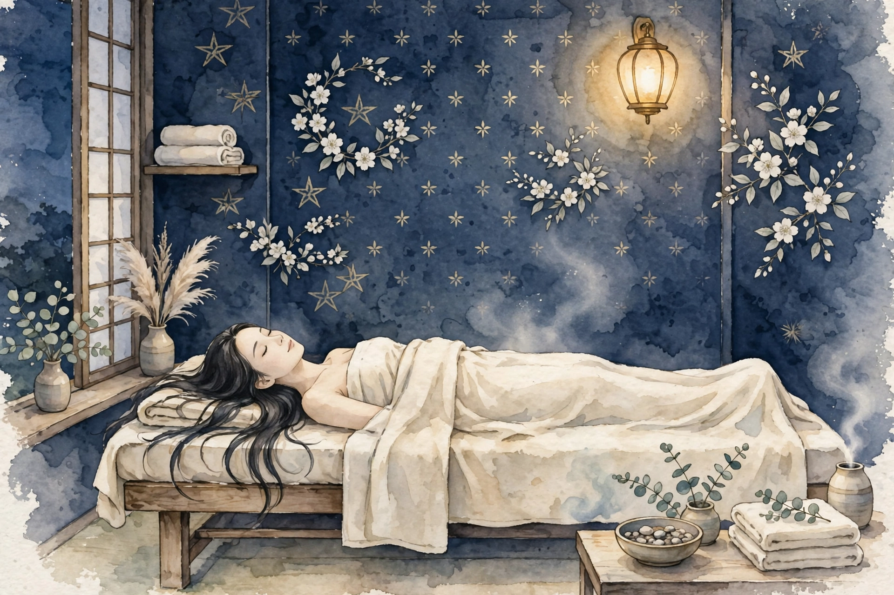
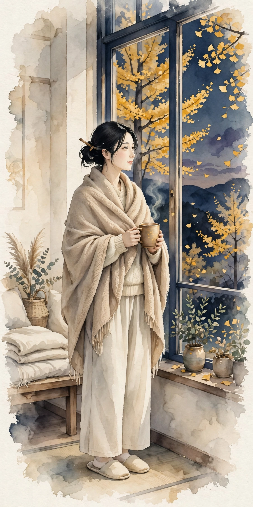
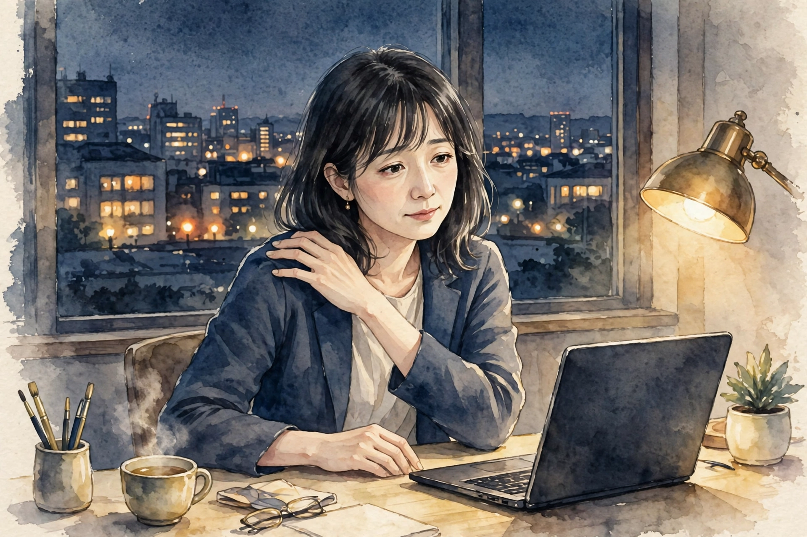
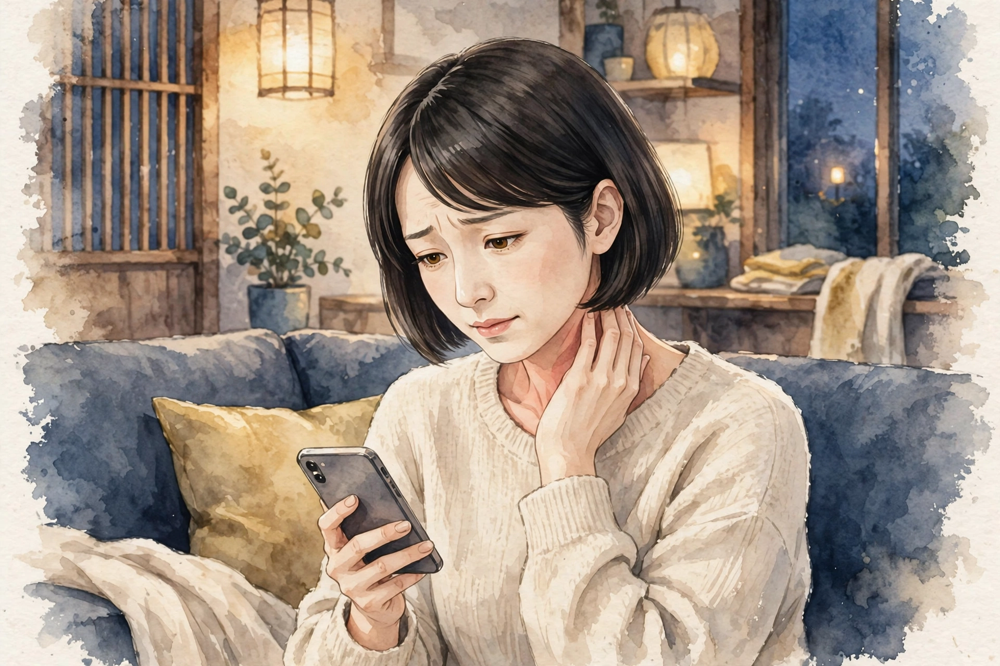

女性専用 ／ オイルマッサージ × 美容整体
一日の終わりに、
肩と心をほどく場所を、
天神に。
近日開院予定（受付は開始次第、このサイトとLINE公式でお知らせします）
美容整体ステラ・アンタレスは、福岡・天神エリアで開院準備中の女性専用サロンです。仕事帰りの夕方から夜にかけて、オイルマッサージと美容整体で、肩こりや首の重さ、姿勢の崩れといった日々のお悩みに寄り添います。
- 女性専用 女性のお客様のみご利用いただけます
- 90分 10,000円 分かりやすい単一価格です
- 月〜土 17:00〜22:00（予定） お仕事帰りに立ち寄れる時間帯です

こんなお悩みはありませんか
当てはまるものが多いほど、毎日の姿勢や過ごし方に負担が積み重なっているサインかもしれません。まずはチェックしてみてください。
- 夕方になると肩が重く、手で揉みたくなる
- スマートフォンを見る時間が長く、首が前に出ている気がする
- デスクワークで背中が丸まり、姿勢が気になる
- 脚のむくみが気になり、靴がきつく感じる日がある
- 頭が重く感じて、すっきりしない日が続いている
- 冷えが気になり、手足が冷たいことが多い
- 眠りが浅く、朝起きても疲れが残っている感じがする
- 顔のむくみや、フェイスラインのもたつきが気になる
お悩みごとの詳しい解説とセルフケアは、でご紹介しています。
施術の様子
アンタレスの施術は、オイルマッサージと美容整体を組み合わせた90分です。当日のお体の状態をお聞きしながら、力加減や重点的にほぐす部位を調整します。
01
カウンセリング
その日のお悩みや体調、気になる部位をお聞きします。姿勢の様子も一緒に確認し、施術の進め方をご相談します。
02
オイルマッサージ
オイルを使って背中・肩・脚などを流れるようにほぐします。こわばりやすい肩や首まわりは、様子を見ながら丁寧に圧を調整します。
03
美容整体
骨盤や背骨まわりのバランスに目を向けながら、姿勢が整いやすい状態を目指します。無理に強い力を加える施術は行いません。
※ 当サロンでは鍼灸は行いません。施術は医療行為ではなく、リラクゼーションと美容を目的としたものです。
料金・営業案内
料金はシンプルな単一価格です。コース選びで迷うことなく、当日のお悩みに合わせて内容を組み立てます。
90分 ／ 10,000円（税込）
近日開院予定（受付は開始次第、このサイトとLINE公式でお知らせします）- ・ 料金は90分10,000円の単一価格です
- ・ 担当セラピストは開院時にご案内します
- ・ お問い合わせ用LINE公式アカウントを開設しました
| 店名 | 美容整体ステラ・アンタレス |
|---|---|
| 場所 | 福岡・天神エリアで開院準備中（施設・住所は決まり次第ご案内します） |
| 対象 | 女性専用 |
| 施術内容 | オイルマッサージ、美容整体（鍼灸は行いません） |
| 料金 | 90分 10,000円（単一価格） |
| 営業時間（予定） | 月〜土 17:00〜22:00 ／ 日曜休み（いずれも予定です） |
| 予約受付 | 近日開院予定のため、現在は受付を行っていません。受付は開始次第、このサイトとLINE公式でお知らせします |
| お問い合わせ | お問い合わせ用LINE公式アカウントを開設しました |
姉妹店のご案内
ステラシリーズは、星の名前を冠した女性専用サロンです。営業中の姉妹店は各店のサイトでご案内しています。
営業中の姉妹店
開院準備中の姉妹店
- 美容整体ステラ・リゲル（東京）開院準備中
- 美容整体ステラ・カペラ（名古屋）開院準備中
- 美容整体ステラ・アンタレス（福岡）開院準備中
このサイトです - 美容整体ステラ・デネブ（札幌）開院準備中
- 美容整体ステラ・プロキオン（横浜）開院準備中
- 美容整体ステラ・アルデバラン（仙台）開院準備中
- 美容整体ステラ・レグルス（広島）開院準備中
- 美容整体ステラ・ベテルギウス（大宮）開院準備中
開院のお知らせについて
美容整体ステラ・アンタレスは近日開院予定です。開院日と受付の開始は、このサイトとLINE公式でお知らせします。お問い合わせ用LINE公式アカウントを開設しました。開院まで、でセルフケアの読み物をお届けします。
セラピストとして働くことに興味のある方は、をご覧ください。
LINE公式アカウントでお問い合わせ
開院・受付開始のお知らせもLINEでお届けします
お悩み別ページ
気になるお悩みを選ぶと、要因の整理・セルフケア・受診の目安をまとめた解説ページをご覧いただけます。解説は一般的な情報であり、診断や治療を行うものではありません。
肩こり
夕方に重くなる肩、揉んでも戻ってしまう張り。デスクワークや姿勢との関わり、毎日のセルフケアの組み立て方を解説します。
首こり
スマートフォンやパソコンで前に出た頭を支える首の負担。首まわりの仕組みと、無理のないほぐし方・整え方を解説します。
姿勢・猫背が気になる
背中が丸まりやすいのは、胸や肩まわりの使い方と骨盤の傾きが関わります。美容整体では骨盤・背骨まわりのバランスに目を向け、姿勢が整いやすい状態を目指します。詳しい解説ページは準備中です。
脚のむくみ・だるさ
夕方に脚が重く感じるのは、同じ姿勢の長さや冷えと関わることがあります。オイルマッサージで脚全体を流れるようにほぐし、軽やかな感覚を目指します。詳しい解説ページは準備中です。
冷えが気になる
手足の冷たさが気になる方には、施術中に体を温めながら、全身をゆるめる進め方を心がけています。日常では入浴や服装の工夫も大切です。詳しい解説ページは準備中です。
頭の重さ・すっきり感
首や肩の張りが続くと、頭の重さを感じることがあります。首・肩・頭まわりを丁寧にほぐし、すっきりした感覚を目指します。強い頭痛や繰り返す頭痛がある場合は、まず医療機関への相談をおすすめします。詳しい解説ページは準備中です。
よくある質問
開院前にいただくことの多いご質問をまとめました。受付に関する最新情報は、このサイトでお知らせします。
いつ開院しますか
近日開院予定です。具体的な開院日は決まり次第、このサイトとLINE公式でお知らせします。現在は予約の受付を行っていません。
場所はどこですか
福岡・天神エリアで開院準備中です。施設と住所は確定次第ご案内します。それまでの間、所在地に関する個別のお問い合わせにはお答えできない場合があります。
女性専用ですか
はい、女性のお客様専用のサロンです。
料金はいくらですか
オイルマッサージと美容整体を組み合わせた90分コースが10,000円の単一価格です。時間や部位によって料金が変わることはありません。
どんな施術ですか。鍼は使いますか
オイルを使ったマッサージと、姿勢のバランスに目を向ける美容整体を組み合わせた施術です。鍼灸は行いません。また、施術は医療行為ではなく、病気の診断や治療を目的としたものではありません。
営業時間を教えてください
月〜土の17:00〜22:00、日曜休みを予定しています。開院時に改めて確定した時間をご案内します。
担当のセラピストは分かりますか
担当セラピストは開院時にご案内します。当サロンは業務委託スタッフ主体の運営のため、個人プロフィールは掲載していません。
予約や問い合わせはどうすればいいですか
受付は開始次第、このサイトとLINE公式でお知らせします。お問い合わせ用LINE公式アカウントを開設しました。下のボタンから友だち追加してお問い合わせください。
妊娠中でも施術を受けられますか
体調や時期によって対応が異なります。開院後の受付開始時に、あらためてご案内します。ご不安な場合は、かかりつけ医への確認をおすすめします。
痛い施術ですか
力加減はお声を聞きながら調整します。無理に強い力を加える進め方はしませんので、施術中も遠慮なくお伝えください。
経絡・経穴ガイド
東洋医学で体のエネルギーの通り道とされる「経絡」と、その上にある要所「経穴（ツボ）」の基礎知識です。当サロンの施術では鍼は使いませんが、経穴の位置を目安に、手や指でやさしく圧をかけるアプローチを取り入れています。ここでの説明は伝統的な考え方の紹介であり、特定の症状への効果を保証するものではありません。
経絡とは
経絡は、東洋医学の古典に基づく考え方で、全身を巡る流れの道筋を指します。正経と呼ばれる主要な経絡は12本あり、それぞれ内臓の働きと結びつけて考えられてきました。経穴は経絡上に点在する要所で、古典では360以上が知られています。現代では、経穴の位置は骨や筋肉の目印からの距離で表す方法が広く使われています。
施術でよく触れる経穴
| 肩井（けんせい） | 肩の稜線のほぼ中央、首の付け根と肩先の中間あたりにある経穴。肩まわりの施術で目安にする代表的な点です。強く押しすぎず、呼吸に合わせてやさしく圧をかけます。 |
|---|---|
| 天柱（てんちゅう） | 首の後ろ、髪の生え際の高さで、太い筋肉の外側のくぼみにある経穴。首の後ろ側をほぐす際の目安になります。 |
| 風池（ふうち） | 後頭部の下、耳の後ろの骨と首の筋肉の間のくぼみにある経穴。天柱よりやや外側に位置します。頭を支えるように、指の腹で包むように触れます。 |
| 合谷（ごうこく） | 手の甲側、親指と人差し指の骨が合う部分のやや人差し指寄りのくぼみにある経穴。手軽に触れられるため、セルフケアでも使われることが多い点です。 |
| 曲池（きょくち） | 肘を曲げたときにできるしわの、外側の端にある経穴。腕まわりの施術の目安になります。 |
| 足三里（あしさんり） | 膝のお皿の下、外側のくぼみから指幅4本ほど下にある経穴。脚の施術でよく知られる点の一つです。 |
| 三陰交（さんいんこう） | 内くるぶしの頂点から指幅4本ほど上、すねの骨の後ろ際にある経穴。脚の内側のラインをたどる際の目安です。 |
| 湧泉（ゆうせん） | 足の裏、指を曲げたときにくぼむ部分にある経穴。足裏へのアプローチの目安になります。 |
ご自宅で経穴に触れるときの注意
- 押す力は「気持ちよい」と感じる程度までにとどめ、痛みを我慢して強く押さないでください。
- 1か所につき、ゆっくり呼吸しながら5秒ほど圧をかけ、数回繰り返すくらいが目安です。
- 皮膚に傷や炎症がある場所、体調がすぐれないときは避けてください。
- しびれや強い痛みなど気になる症状がある場合は、セルフケアで様子を見続けず、医療機関に相談してください。
※ 経穴の位置は体の目印からの目安です。個人差があるため、位置の感じ方には幅があります。
セラピスト募集
美容整体ステラ・アンタレス（福岡・天神エリア）では、開院に向けて業務委託のセラピストを募集しています。夕方から夜の時間帯を中心に、あなたのペースで働ける形を一緒に作っていきましょう。
| 雇用形態 | 業務委託 |
|---|---|
| 報酬 | 施術料の60％ |
| 勤務地 | 福岡・天神エリア（施設は開院準備中です） |
| 働く時間 | 月〜土 17:00〜22:00（予定）の範囲で、希望に合わせて設定できます |
| 対象 | 女性セラピストを募集しています（女性専用サロンのため） |
未経験者は研修無料
未経験の方も歓迎します。施術の基礎から学べる研修を無料でご用意していますので、安心してスタートできます。
経験者は技術をそのままメニューに
経験者の方は、お持ちの技術をそのままメニュー化できます。これまで磨いてきた手技を、そのままお客様に届けてください。
時間は希望に合わせて
働く時間は希望に合わせて設定できます。週に数日だけ、夜の数時間だけといった働き方もご相談ください。
Stella Antares — Beauty Seitai Salon for Women
Stella Antares is a women-only salon preparing to open in the Tenjin area of Fukuoka, Japan. We combine oil massage with beauty seitai (a Japanese body-balancing treatment) in a single, simple 90-minute session.
| Salon | Beauty Seitai Stella Antares — women only |
|---|---|
| Location | Tenjin area, Fukuoka (preparing to open; address to be announced) |
| Treatment | Oil massage and beauty seitai. We do not offer acupuncture. Treatments are for relaxation and beauty care, and are not medical treatment. |
| Price | 90 minutes — ¥10,000 (single flat rate, tax included) |
| Hours (planned) | Monday to Saturday, 5:00 p.m. – 10:00 p.m. Closed on Sundays (planned) |
| Therapists | Our therapists will be introduced when the salon opens. |
| Contact | Our official LINE account for inquiries is now open. Please add us as a friend using the button below to contact us. |
About the treatment
Each session begins with a short consultation about how your body feels that day — stiff shoulders, a heavy neck, tired legs, or posture concerns. The oil massage works over the back, shoulders and legs with pressure adjusted to your comfort, and the beauty seitai part focuses on the balance around the pelvis and spine, aiming for a posture that feels naturally upright. Strong, painful techniques are not used.
Sister salons
Stella Antares is part of the Stella series of women-only salons, each named after a star. Our sister salons in Umeda (Osaka), Sannomiya (Kobe), Namba (Osaka), Ashiya and Kyoto are already open, and further salons — including Antares in Fukuoka — are in preparation in Tokyo, Nagoya, Sapporo, Yokohama, Sendai, Hiroshima and Omiya.
ブログ・コラム
お悩み別の解説ページと、季節に合わせたセルフケアのコラムをお届けします。開院に向けて、少しずつ記事を増やしていきます。
-

コラム ／ 季節のセルフケア那珂川沿いの風が冷たくなる福岡の晩秋は、冷えと乾燥の両方を感じやすい時期です。温める工夫、水分と保湿、こわばりをためない小さな動きをご紹介します。
-

お悩み別 ／ 肩こりデスクワークや姿勢と関わる肩の張りを、要因ごとに整理しました。毎日のセルフケアと、受診を考える目安もまとめています。
-

お悩み別 ／ 首こり前に出た頭を支える首の負担を、姿勢の観点から整理しました。画面との付き合い方や、首まわりのセルフケアをご紹介します。
開院のお知らせや新しい記事は、このページとサイトのトップでご案内します。
サイトマップ
美容整体ステラ・アンタレスのサイト内のページ一覧です。
サイト内のページ
記事ページ
姉妹店（外部サイト）
天神で気になる肩こり ── 要因の整理と、毎日のセルフケア
「一日の仕事を終えて天神の街に出たとき、肩がずっしりと重い」「帰りの地下鉄やバスの中で、思わず肩をぐるぐる回してしまう」。福岡・天神は九州随一の商業地であると同時に、多くのオフィスが集まる働く街でもあります。デスクワーク中心の方、接客や販売で一日立ち続ける方、通勤で地下鉄やバスに揺られる方。過ごし方はさまざまでも、夕方になると肩まわりの張りや重さを感じる方は少なくありません。肩こりは病名ではなく、首から肩、背中にかけての張り・重さ・だるさをまとめて表す言葉です。感じ方には個人差が大きく、検査で大きな異常が見つからないことも珍しくありません。だからこそ、「なぜ張りやすいのか」を整理し、日常の工夫と外からのケアを組み合わせていくことが大切です。このページでは、肩こりの要因とセルフケア、受診の目安をまとめました。
肩の張りは、どこから来るのか
肩まわりは、僧帽筋をはじめとする複数の筋肉が何層にも重なってできています。頭の重さはおよそ5〜6キログラムと言われ、その頭を支え、腕を動かすたびに働く肩まわりの筋肉には、立っているだけ、座っているだけでも小さな負担が積み重なります。筋肉が力んだ状態が長く続くと、まわりの血の巡りが滞りやすくなり、重さや張りとして感じやすくなると考えられています。張りを覚える場所は人それぞれで、肩の稜線の真ん中あたりが気になる方、肩甲骨の内側が詰まったように感じる方、首筋から肩先まで広い範囲でだるい方もいます。「どこが、どんなときに気になるか」を把握しておくと、ケアの重点が定めやすくなります。
要因の整理：肩が張りやすくなる5つの背景
1. 通勤と移動の姿勢
福岡では、地下鉄や西鉄の電車・バスで通勤する方が多くいます。車内ではスマートフォンを見下ろす姿勢が続きやすく、つり革や手すりにつかまる側の肩には片寄った負担がかかります。バッグをいつも同じ側の肩にかけていると、首から肩にかけてのバランスも偏りがちです。座れたときはバッグを膝の上に置く、立つときは両足に均等に体重をかけるなど、移動中の小さな工夫が肩の負担を分け合ってくれます。
2. デスクワークと画面の環境
天神のオフィスでパソコンに向かう時間が長い方は、腕を前に出した姿勢が続きます。この姿勢では肩が内側へ巻き込みやすく、肩甲骨が外側へ開いたまま固まりがちです。筋肉は、大きく動かしているときよりも「同じ姿勢で力を入れ続けている」ときに疲れを感じやすい性質があります。画面が低い、椅子と机の高さが合っていないといった環境も、知らないうちに肩へ負担を寄せます。1時間に一度は席を立って肩を回すなど、姿勢を変える合図を自分で作ることが、ため込まない第一歩です。
3. 冷房と外気の寒暖差
福岡の夏から秋にかけては蒸し暑い日が続き、屋外と、冷房の効いたオフィスや地下街との行き来が増えます。汗をかいた体が冷房で急に冷えると、首や肩の筋肉はこわばりやすくなります。天神地下街のような長い地下通路を歩く移動が多い方も、冷えた空気に長く触れることになります。薄手の羽織りものを一枚持ち歩く、首元を覆う、といった備えは、冷えからくる張りをやわらげる助けになります。帰宅後に湯船で肩まで温まることも、日常でできる大切なケアです。
4. 姿勢の崩れと体の使い方
背中が丸まった姿勢では、頭の位置が体の中心より前にずれ、首や肩の後ろ側の筋肉が引き伸ばされながら頭を支え続けることになります。骨盤の傾きや座り方の癖も、背中から肩への負担の伝わり方に関わります。姿勢は「良い形を一日中保ち続ける」ものではなく、「崩れたら戻す」「同じ形に固めない」ものと考えるほうが、現実的で続けやすくなります。鏡の前で一度、耳と肩の位置関係を確かめてみるのもよい機会です。
5. 睡眠と心身の緊張
仕事の忙しい日が続くと、眠っている間も無意識に肩へ力が入り、朝から張りを感じることがあります。枕の高さが合っていない場合も、首から肩にかけて負担がかかりやすくなります。肩の張りは、その日の体の状態だけでなく、過ごし方全体を映すサインでもあります。張りが強い日は無理を重ねず、休息を優先することもケアの一つです。
当サロンでのアプローチ
ステラ・アンタレスでは、オイルマッサージで背中から肩、首まわりを流れるようにほぐし、肩甲骨のきわにも丁寧にアプローチします。力加減はお声を聞きながら調整し、強く押すこと自体を目的にはしません。美容整体では、骨盤や背骨まわりのバランスに目を向け、肩に負担が集まりにくい姿勢を目指します。施術で目指すのは、その場で「軽くなった」と感じられる心地よさと、日常に戻ったあともご自身の姿勢に目を向けやすくなる状態です。なお、当サロンの施術は医療行為ではなく、肩こりの原因となる病気の診断や治療を行うものではありません。気になる症状が続く場合は、医療機関での相談とあわせてご利用ください。
ご自宅でできるセルフケア
肩回しと肩の上げ下げ
両肩を耳に近づけるようにすくめて3秒保ち、ストンと力を抜いて下ろします。これを5回ほど繰り返したあと、肘で大きな円を描くように肩を前回し・後ろ回しに各5回ずつ動かします。勢いをつけず、呼吸を止めないことがポイントです。デスクワークの合間に取り入れると、ため込んだ緊張を小分けにほぐせます。
胸を開くストレッチ
背筋を伸ばして両手を背中の後ろで組み、肩甲骨を寄せるようにしながら、組んだ手を斜め下へ伸ばします。胸の前側が心地よく伸びる位置で15〜20秒保ちます。肩が内側に巻き込みやすい方は、肩そのものだけでなく、胸側の筋肉の縮こまりにも目を向けると、姿勢が戻しやすくなります。痛みが出るほど無理に伸ばさないでください。
移動時間をケアの時間に
天神の街は歩いて回れる範囲に店や駅が集まっています。天気のよい日は、一駅分だけ歩く、エスカレーターではなく階段を使う、といった小さな選択を積み重ねてみてください。歩くことは全身の血の巡りを助け、肩まわりのこわばりをほどくきっかけにもなります。張りが強い日は無理をせず、休息を優先してください。
温める工夫
帰宅後は、シャワーだけで済ませず湯船に浸かって肩まで温まることをおすすめします。時間がない日は、蒸しタオルを首の付け根から肩にかけて数分当てるだけでも、こわばりがゆるむ感覚を得やすくなります。冷房で冷えた日は特に、首元を冷やさない服装を心がけてください。
作業環境の見直し
椅子に深く腰かけ、足裏全体が床につく高さに調整します。画面は目線がやや下がる程度の高さに置き、キーボードに手を置いたときに肘が自然に曲がる位置を目安にしてください。小さな調整の積み重ねが、一日の終わりの肩の重さを変えていきます。
セルフケアを続けるコツ
セルフケアは、一度に長く行うよりも、短いものを一日のあちこちに散らすほうが続けやすく、張りの波も小さくなっていきます。印刷を待つ間に肩回しをする、湯上がりに胸を開くストレッチをする、乗り換えのついでに一駅分歩く、といった具合に、すでにある習慣の直後にくっつけてしまうのがコツです。張りが強い日だけ頑張るのではなく、調子のよい日も含めて淡々と続けてみてください。張りの出方は仕事量や季節でも変わります。「張りやすいタイミング」を知っておくと、先回りの備えも立てやすくなります。セルフケアでまかないきれない部分は無理に抱え込まず、サロンの施術のような外からのケアと組み合わせていくことが、長く付き合っていくうえでの現実的な考え方です。
受診の目安
肩こりの背景は一つではなく、通勤や姿勢、作業環境、冷え、睡眠などが重なっていることがほとんどです。一度にすべてを変えようとせず、続けられる工夫から少しずつ取り入れてみてください。そして、ご自身の手だけでは届かない背中や肩甲骨まわりのケアは、サロンの施術にお任せいただければと思います。ステラ・アンタレスは福岡・天神エリアで開院準備中です。近日開院予定（受付は開始次第、このサイトとLINE公式でお知らせします）。お問い合わせ用LINE公式アカウントを開設しました。
天神で気になる首こり ── 頭の位置から考える、要因とセルフケア
「電車の中でスマートフォンを見ていたら、いつの間にか首が重くなっていた」「夕方になると、頭を手で支えたくなる」。首こりのお悩みは、肩こりと並んで多く聞かれるものの一つです。地下鉄やバスでの移動中、オフィスのデスク、そして自宅のソファ。画面を見る場面が一日のあちこちに散らばる今の暮らしでは、気がつくと頭が前に出た姿勢のまま長く過ごしてしまいがちです。首は、重さのある頭を細い柱のような構造で支える場所です。その分、姿勢の影響を受けやすく、小さな負担の積み重ねが張りや重さにつながりやすい部位でもあります。このページでは、首の仕組みと負担が集まる要因を整理し、日常でできるセルフケアと受診の目安をまとめました。
首の仕組み：細い柱が、重い頭を支えている
首は7つの頸椎（けいつい）と呼ばれる骨が積み重なってできており、ゆるやかな前弯カーブを描くことで、頭の重さを分散して支えています。頭の重さはおよそ5〜6キログラムで、首がまっすぐに立っているときには、その重さは比較的まっすぐ下へ伝わります。ところが、画面をのぞき込むように頭が前に傾くほど、てこの原理で首の後ろ側の筋肉が引っ張られ、支えるための負担が大きくなります。この状態が続くと、筋肉は緊張したまま休む間がなくなり、張りや重さとして感じやすくなります。首と肩、背中は一続きの筋肉でつながり、互いに影響し合うため、ケアは首だけに絞らず、肩や背中とあわせて見ることが大切です。
要因の整理：首に負担が集まる5つの背景
1. 通勤中のスマートフォン
地下鉄やバスの車内では、手元の画面をのぞき込む姿勢がそのまま続きます。揺れる車内では画面に集中しようとして、首や肩に余計な力も入りがちです。移動時間が長い方ほど、この姿勢の積み重ねは見過ごせません。画面をできるだけ目線の高さに近づける、停車駅ごとに一度顔を上げる、といった小さな区切りを作るだけでも、ため込む量は変わってきます。
2. パソコン作業の環境
画面が低かったり、体から遠かったりすると、顔が前に出て首が突き出た姿勢になりやすくなります。ノートパソコンを机に直接置く使い方は、特に画面の位置が下がりがちです。台や外付けのキーボードで画面の位置を上げるなど、環境側を整えることは、「姿勢を頑張って直し続ける」よりも無理のない対策です。天神のオフィスでも在宅勤務でも、まず画面の位置と椅子の高さから見直してみてください。
3. 枕と眠る姿勢
枕が高すぎると首が前に曲がった姿勢で眠ることになり、低すぎても頭が落ちて首が反りやすくなります。朝起きたときに首の張りを感じる日が続く場合は、枕の高さや硬さが合っているかを見直すサインかもしれません。バスタオルを重ねて高さを細かく調整して試す方法もあります。眠っている姿勢は一晩で何時間も続くため、首への影響も小さくありません。
4. 荷物の持ち方
重いバッグをいつも同じ側の肩にかけていると、首から肩にかけて左右のバランスが偏りやすくなります。天神での買い物帰りなど、荷物が増える日は特に意識したいところです。リュックのように両肩で支える形にする、荷物を両手に分ける、といった工夫は、首まわりの負担を分散させる助けになります。
5. 緊張と呼吸の浅さ
集中しているときや緊張しているときは、無意識に肩が上がり、呼吸が浅くなりがちです。首の横や前側の筋肉は呼吸の補助にも関わるため、浅い呼吸が続くと首まわりの緊張も抜けにくくなります。作業の合間に一度、ゆっくりと息を吐き切ること。それだけでも、首と肩の力を抜くきっかけになります。
当サロンでのアプローチ
ステラ・アンタレスでは、首そのものへの強い操作は行わず、首を支える肩・背中・肩甲骨まわりをオイルマッサージで丁寧にほぐしたうえで、首まわりには指の腹で包むようなやさしい圧で触れていきます。施術中に首を鳴らすような操作は行いません。頭の位置は骨盤や背中の姿勢とも関わるため、美容整体では全身のバランスに目を向け、頭が自然な位置に戻りやすい状態を目指します。なお、当サロンの施術は医療行為ではなく、首の不調の原因となる病気の診断や治療を行うものではありません。症状が強い場合や長く続く場合は、医療機関での相談とあわせてご利用ください。
ご自宅でできるセルフケア
あごを引く小さな動き
背筋を伸ばして正面を向き、あごを水平に後ろへ引くように小さく動かし、5秒保って戻します。指をあご先に軽く当てると動きの目安になります。5回ほどを1セットとして、作業の合間に取り入れてみてください。頭の位置を本来の場所へ戻す感覚をつかむための、負担の少ない運動です。痛みが出る場合は無理に行わないでください。
首の横を伸ばすストレッチ
椅子に座り、片手を頭の側面に添えて、耳を肩に近づけるように首をゆっくり横へ倒します。反対側の肩が上がらないように意識し、心地よい伸びを感じる位置で15〜20秒保ちます。左右ともに行い、勢いや強い力で引っ張らないことが大切です。めまいやしびれを感じる場合は、すぐに中止してください。
画面から目と首を休ませる
長時間の作業では、30分に一度を目安に画面から目を離し、遠くを見ながら顔を上げ、肩を回す時間を作ります。スマートフォンは、できるだけ目線の高さに持ち上げて使うと、うつむく角度を小さくできます。就寝前の1時間は画面を見る時間を減らすことも、首と睡眠の両方にとって取り入れやすい工夫です。
首元を温める
入浴では首まで湯に浸かり、冷房の強い場所ではスカーフなどで首元を覆います。蒸しタオルを首の後ろに当てるのも、手軽にできる温め方です。冷えでこわばった筋肉は動きにくくなるため、温めてからストレッチを行うと、無理なく伸ばしやすくなります。
首の前側をゆるめる工夫
うつむく姿勢が続くと、首の後ろ側だけでなく、前側や横側の筋肉も縮こまったままになりやすくなります。ケアの際は、鎖骨の上あたりから耳の後ろにかけてのラインを、指の腹でやさしくなでるように触れてみてください。力を入れて揉む必要はなく、皮膚の表面を温めるような気持ちで十分です。首の前側には大切な組織が通っているため、のどの正面を強く押すことは避けてください。
張りやすいタイミングを知る
首の張りが出やすいのは、画面作業が長く続いた日だけとは限りません。移動の多い日、重い荷物を持った日、眠りの浅かった翌朝など、きっかけは人によって異なります。一週間ほど張りを感じたタイミングをメモしておくと、ご自身のパターンが見えてきて、先回りの対策が立てやすくなります。
首こりは、肩と背中とあわせて見る
首の張りを訴える方の多くは、肩や背中にも同じようなこわばりを抱えています。これは、首・肩・背中が一続きの筋肉や筋膜でつながり、姿勢の影響を共有しているためです。首だけを集中的に揉んでも、背中が丸まった姿勢のままでは、頭の位置が変わらず、首への負担が戻りやすくなります。逆に、背中や肩甲骨まわりが動きやすくなると、頭の位置も整いやすくなり、首の後ろ側の筋肉が頑張りすぎなくて済むようになります。セルフケアでも、首の運動だけでなく肩回しや胸を開くストレッチを組み合わせることが、結果的に首の楽さにつながります。当サロンの施術でもこの考え方を大切にし、首まわりだけに絞らず、肩・背中を含めた全体のバランスを見ながら進めていきます。
受診の目安
首こりのケアは、「首だけをほぐす」ことよりも、頭の位置や日常の姿勢、画面との付き合い方を含めて見直すことが近道です。できることから一つずつ取り組み、ご自身では届きにくい肩や背中のケアは、サロンの施術にお任せください。ステラ・アンタレスは福岡・天神エリアで開院準備中です。近日開院予定（受付は開始次第、このサイトとLINE公式でお知らせします）。お問い合わせ用LINE公式アカウントを開設しました。
福岡の秋が深まる頃に ── 冷えと乾燥から体を守る過ごし方
11月も半ばを過ぎると、福岡の街の空気も少しずつ冬の気配を含んできます。天神の街路樹のイチョウが黄葉し、那珂川沿いを歩くと、頬に当たる風の冷たさに季節の進みを感じます。朝晩の冷え込みが増えるこの時期は、肩まわりがいつもより張る気がする、手足の先が冷たくてなかなか温まらない、肌や喉の乾燥が気になる、といった小さな変化を感じやすい季節でもあります。今回は、福岡の晩秋から初冬にかけての体の変化と、毎日の暮らしの中で無理なく取り入れられる工夫をご紹介します。
なぜこの季節は、冷えや張りを感じやすいのか
気温が下がると、体は熱を逃がさないように血管を収縮させ、筋肉もこわばりやすくなります。肩や首に力が入りやすいのは、寒さから身を守る自然な反応でもあります。福岡は冬でも比較的穏やかな気候と言われますが、その分、暖かい日と冷え込む日の差に服装の調整が追いつかず、知らないうちに体が冷えていることも少なくありません。また、日照時間が短くなることで外を歩く機会が減り、運動量が落ちがちなのもこの時期の特徴です。動く時間が減ると、体の中で熱を生む機会も、血の巡りを助ける筋肉の動きも少なくなります。冷え、こわばり、活動量の低下。この三つが重なることで、晩秋は肩や首の張りを感じやすくなるのです。
温める工夫は「首」のつく場所から
体を効率よく温めたいときは、首・手首・足首という「首」のつく場所を覆うことが、昔からよく知られた工夫です。首元には太い血管が通っており、ここを冷やさないことで、全身の温かさを保ちやすくなります。外出のときはマフラーやストールを一枚加える、室内では足首まである靴下を選ぶ。そうした小さな選択の積み重ねが、一日の終わりの体の軽さにつながります。帰宅後の入浴も大切な時間です。シャワーだけで済ませがちな日こそ、ぬるめのお湯に肩まで浸かって、ゆっくり温まってみてください。湯上がりは湯冷めをしやすいので、体が温かいうちに着替えて、首元を冷やさないようにすることも忘れずに。
乾燥の季節は、水分と保湿を早めに
空気が乾燥すると、肌のうるおいが逃げやすくなるだけでなく、喉や鼻の粘膜も乾きやすくなります。室内では加湿器を使う、洗濯物を部屋干しするなど、湿度を保つ工夫を取り入れましょう。水分補給は、冷たい飲み物よりも常温や温かいものを選ぶと、冷えの面でも取り入れやすくなります。白湯や温かいお茶を少しずつ飲む習慣は、体を内側から温める助けにもなります。お風呂上がりの保湿は、肌がまだ温かく湿っているうちに行うと、うるおいを閉じ込めやすくなります。オイルマッサージを受ける方にとっても、乾燥しやすいこの季節は、肌のコンディションを整えておくことが心地よさにつながります。
こわばりをためない、小さな動き
寒い日はどうしても体が縮こまり、動く量が減ります。そんな日こそ、家の中でできる小さな動きを取り入れてみてください。両肩を耳に近づけるようにすくめて、ストンと力を抜く動きを数回繰り返す。背伸びをしながら深呼吸をする。湯船の中で手首や足首をゆっくり回す。どれも特別な道具はいりません。大切なのは、こわばりを一日分ため込む前に、小分けにほどいていくことです。天気のよい日中には、大濠公園や那珂川沿いを少し歩くのもおすすめです。黄葉した木々を眺めながら歩く時間は、体を温めるだけでなく、気分転換や夜の眠りの準備にもつながります。
眠りの準備も、季節に合わせて
冷えで手足が冷たいまま布団に入ると、寝つきにくさを感じることがあります。就寝の少し前に入浴を済ませ、体が温まった状態で布団に入ると、眠りに入りやすくなると言われています。寝室が冷え込みすぎないよう、湯たんぽで布団を温めておくのもよい工夫です。スマートフォンを眺める時間は、就寝の1時間前を目安に切り上げて、温かい飲み物とともに静かな時間を過ごしてみてください。季節に合わせて暮らしのリズムを少しだけ調整することは、来る冬を健やかに迎える準備でもあります。
晩秋のケアは、特別なことを始めるよりも、「冷やさない」「乾かさない」「ため込まない」の三つを、できる範囲で続けることが大切です。それでも肩や首の張りが抜けない日は、プロの手に委ねる時間も選択肢の一つです。美容整体ステラ・アンタレスは、福岡・天神エリアで開院準備中の女性専用サロンです。オイルマッサージと美容整体で、冷えた体のこわばりを丁寧にほぐすお手伝いができるよう、準備を進めています。近日開院予定（受付は開始次第、このサイトとLINE公式でお知らせします）。お問い合わせ用LINE公式アカウントを開設しました。開院まで、このコラムで季節のセルフケアをお届けしていきます。